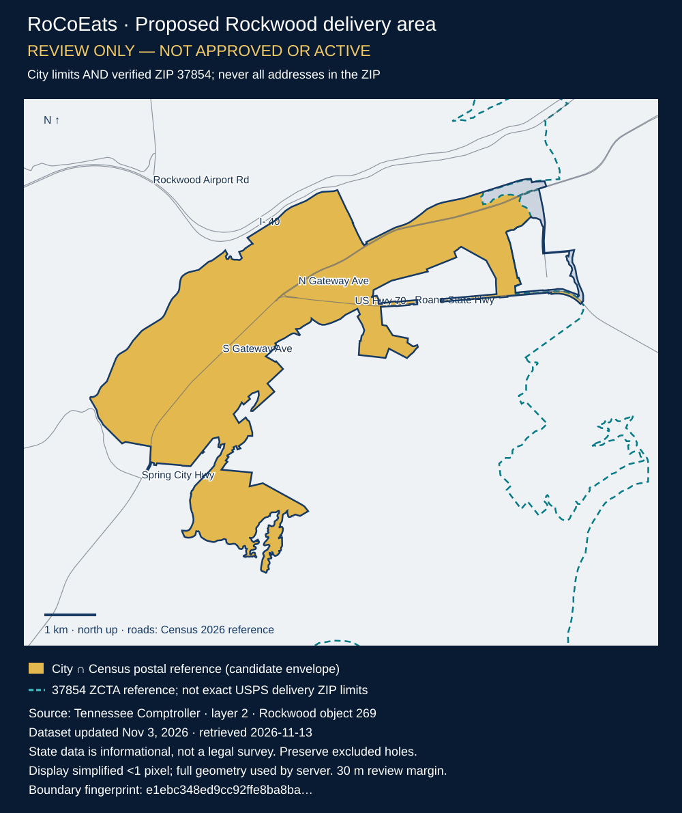

Rockwood boundary proposal
Not approved or active. Pinch to zoom the map, or open the original state dashboard to compare streets and landmarks.
Open official Tennessee municipal dashboard · Open full-size map

- Approve the blue municipal outline, including excluded holes, as our service boundary only after reviewing it.
- Gold is a reference intersection with the 2020 Census ZCTA, not a guarantee that any address has ZIP 37854. The server must verify the exact street address and returned postal code.
- Approve Geocodio evaluation using public or expressly authorized addresses. No account, API call, customer address sharing or expense has been authorized.
- Proposed conservative rule: exact street/building evidence inside the boundary, verified ZIP 37854, at least 30 m from any boundary edge. Ambiguous or missing evidence blocks checkout for review.
State item publication: 2025-05-06T17:09:59+00:00. Latest item update: 2026-11-03T12:48:53+00:00. Version: TN-COT-432a7396947245d8acb98d9d2cba292b-layer2-269-20261103.
Geometry SHA-256: e1ebc348ed9cc92ffe8ba8ba0d00873486c9fec851233d4190daad3538289d1f
Tennessee describes these municipality-reported boundaries as informational, not legal descriptions. Census ZCTA outlines approximate postal areas. This proposal never authorizes service throughout ZIP 37854.